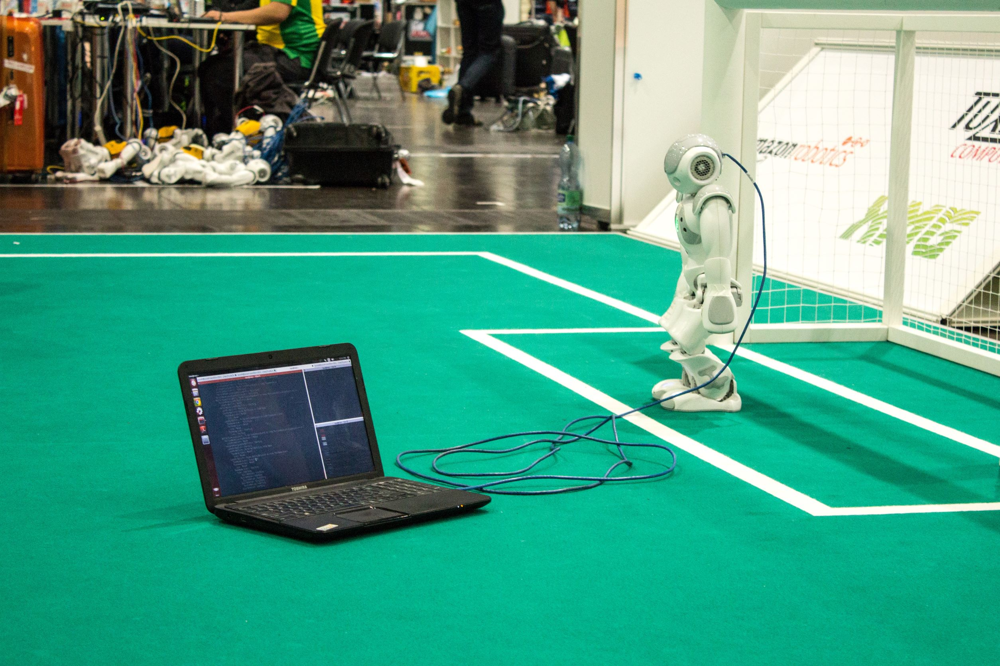

Le sport adore les chiffres et les statistiques. Or, la technologie moderne de l’intelligence artificielle permet de capter des milliers de donnes dans les milieux sportifs, l’utilisation de celle-ci devient alors pertinente lorsque s’agit de traiter ces dites données et de les interpréter en résultat dit gagnant pour l’athlète. C’est ce que Cedric Mangau, CEO de l’intelligence artificielle PIQ, reproduit en créant ce robot capable de mesurer des performances sportives en temps réel.
Cette intelligence est bien plus qu’un simple traqueur d’activité. En, en effet le capteur PIQ dans la boxe par exemple permet de calculer la vitesse des coups, le nombre de coups ou bien même la vitesse de rétraction. Ce robot calcule jusqu’à 195000 points à la minute en direct et ces informations sont plus tard traduites à l’aide de la technologie incluse dans le nano robot puissant. Ainsi, les résultats sont traduits en point fort et faible, en point gagnant ou bien en point perdant. Ils sont ensuite accessibles directement au public général à travers l’application et permet aux utilisateurs de donc de garder l’œil sur leurs performances en tout temps.
Puisque les résultats sont fournis en direct, pour ceux qui regardent un match de boxe par exemple, ils ont accès à ces statistiques pour discerner et identifier le gagnant du combat. Ce genre de technologie sera d’autant plus utile pour les coaches de haut niveau qui ont pour rôle justement d’analyser les performances de leur athlète. Les statistiques et les performances qui ne sont pas visibles explicitement à l’œil nu sont donc captées par le robot PIQ
Cette intelligence compare aussi les résultats de vos séances précédentes entre eux pour cerner les différences et donc les choses à corriger. De plus, cette technologie ne rend tout de même pas les coaches obsolètes, car ils ont tout de même le rôle de traduire ses résultats en méthode d’entrainement pour que le combattant puisse éventuellement s’améliorer. C’est pourquoi cette intelligence n’a pas eu beaucoup de difficultés à rentrer dans le marché d’outil sportif et est maintenant utilisée au niveau professionnel par de nombreux athlètes de la MMA. Le sport qui adore les chiffres et les statistiques.
Quelle autres applications cette approche aussi efficaces offre-t-elle?
Entrée par Yanis El Bachir Latrous
Référence : SAWH Micheal, « Living with PIQ Robot: The AI-powered boxing wearable » dans Wareable , 15 juin 2017 [https://www.wareable.com/sport/piq-robot-boxing-review-430] (consulté le 7 novembre 2021)